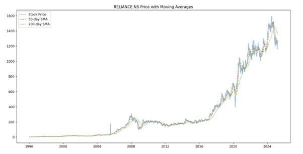
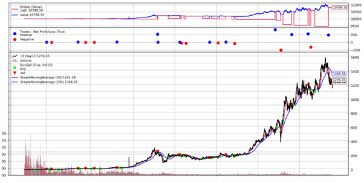
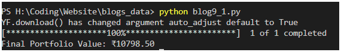

At this point, we’ve all heard a lot about Quant investing and probably even invested in some Quant – based – fund. So as the market makes new bottoms every day and as my portfolio bleeds further, I decided that this might be a good time to get my hands on something new. I had some prior experience working on Python, mainly integrating it with finance in some form, and so exploring quantitative finance was on my to-do-list since a long time, and I think this is a good time to start.
In this blog, I’m going to write about something that I find pretty interesting, i.e. Backtesting a strategy. Mind you this is a rather new domain for me compared to stuff I’ve covered in previous blogs, so it might not be perfect but I’ll try my best.
P.S. Don’t worry if you don’t have any experience with Python, what we are covering in this blog is very basic stuff. I’ll be leaving a few links down for those who need to start with Python, which will teach you the basics and help you set it up on your system, so just go through those and you’ll be set!
Click here
Alright! So assuming you now have Python ready to go, let’s get started!
What is Backtesting?
Backtesting is the process of evaluating a trading strategy using historical data to determine its effectiveness before applying it in live markets. It allows traders and investors to simulate trades based on past price movements to assess profitability and risk.
It basically tells you how good/bad a strategy would have performed in the past and considering that the markets often repeat themselves, I would say that if something worked superbly in the past, it has a fairly decent chance of working in the future as well.
Key Python Libraries for Backtesting
There are a few libraries we’ll be using to backtest a strategy, and you can download these by executing the following command in your command prompt:
pip install yfinance pandas matplotlib backtrader
1. Pandas (For Data Handling)
Pandas is essential for working with time-series data, which is the core of backtesting. - Stores historical price data in DataFrames
- Allows efficient manipulation of price, volume, and technical indicators
2. NumPy (For Numerical Computations)
NumPy helps with:
- Fast numerical operations
- Vectorized computations for performance optimization
3. Matplotlib (For Visualization)
This library are crucial for plotting price data, indicators, and trade signals.
4. yFinance (For Fetching Stock Data)
We obviously need the historical data of companies to backtest strategies, and thanks to Yahoo, by some miracle Yahoo finance has a free API which will help us do just that. This API is yFinance.
5. Backtrader (For Advanced Backtesting)
So, this is the main stuff, Backtrader is a powerful framework designed specifically for backtesting trading strategies. It:
- Provides built-in indicators like moving averages, RSI, MACD
- Simulates orders, positions, and portfolio value
- Allows strategy customization and optimization
We all know about the ‘Golden – Crossover’ strategy, which basically says that we take a long position when a shorter timeframe MA (moving average) crosses a higher timeframe MA from below. The opposite of this is called the ‘Death – Crossover’ but today we’ll be backtesting the golden crossover.
How to Backtest a Trading Strategy in Python
Step 0: Installing the packages
Before starting, ensure you have all the required packages installed. Run the following command in your terminal or command prompt:
pip install yfinance pandas matplotlib backtrader
Step 1: Fetching Data
The first step is to obtain historical stock price data using yFinance.
import yfinance as yf
import pandas as pd
import matplotlib.pyplot as plt
# Fetch historical data
ticker = 'RELIANCE.NS'
data = yf.download(ticker)
# Ensure correct column formatting
data.columns = data.columns.get_level_values(0)
if data.empty:
raise ValueError(f"Failed to fetch data for {ticker}. Check ticker symbol or connection.")
Step 2: Computing Indicators
Calculate the 50-day and 200-day Simple Moving Averages (SMA):
We don’t really need to do this as backtrader itself has built in indicators, but I think it’s a good exercise for you to plot the SMA’s on your own.
# Calculate moving averages
data['SMA_50'] = data['Close'].rolling(window=50).mean()
data['SMA_200'] = data['Close'].rolling(window=200).mean()
Step 3: Defining Buy/Sell Signals
We create a Signal column to indicate when to buy or sell.
# Define signals
data['Signal'] = 0 # Default no position
data.loc[data['SMA_50'] > data['SMA_200'], 'Signal'] = 1 # Buy Signal
data.loc[data['SMA_50'] < data['SMA_200'], 'Signal'] = -1 # Sell Signal
Step 4: Visualizing the Strategy
Again, not essential, but it doesn’t hurt to do this.
We plot the stock price along with its moving averages and signals.
plt.figure(figsize=(12,6))
plt.plot(data['Close'], label='Stock Price', alpha=0.5)
plt.plot(data['SMA_50'], label='50-day SMA', linestyle='dashed')
plt.plot(data['SMA_200'], label='200-day SMA', linestyle='dotted')
plt.legend()
plt.title(f'{ticker} Price with Moving Averages')
plt.show()

Implementing the Strategy in Backtrader
Instead of manually managing trades, we use Backtrader for a more structured backtesting approach.
Step 5: Setting Up Backtrader
First, install Backtrader if you haven't:
pip install backtrader
Next, define the strategy:
import backtrader as bt
class SMACrossover(bt.Strategy):
def __init__(self):
self.sma50 = bt.indicators.SimpleMovingAverage(self.data.close, period=50)
self.sma200 = bt.indicators.SimpleMovingAverage(self.data.close, period=200)
def next(self):
if self.sma50[0] > self.sma200[0] and not self.position:
self.buy()
elif self.sma50[0] < self.sma200[0] and self.position:
self.sell()
Step 6: Running the Backtest
We now create a Backtrader engine to execute the strategy.
# Set up the backtesting engine
cerebro = bt.Cerebro()
datafeed = bt.feeds.PandasData(dataname=data)
cerebro.adddata(datafeed)
cerebro.addstrategy(SMACrossover)
cerebro.run()
erebro.plot()
# Display final portfolio value
portfolio_value = cerebro.broker.getvalue()
print(f'Final Portfolio Value: ₹{portfolio_value:.2f}')


Conclusion
So that’s it, we successfully back tested our first strategy, and I’m confident that if you followed along, you certainly would have been able to see the results.
This is just the beginning, backtesting is a very vast field and you can read about it more in my future two blogs, which will be a continuation of these.
In the next part, we will analyze the strategy’s performance, including:
- Calculating returns and drawdowns
- Adding more indicators like RSI & MACD
- Optimizing strategy parameters
Stay tuned!